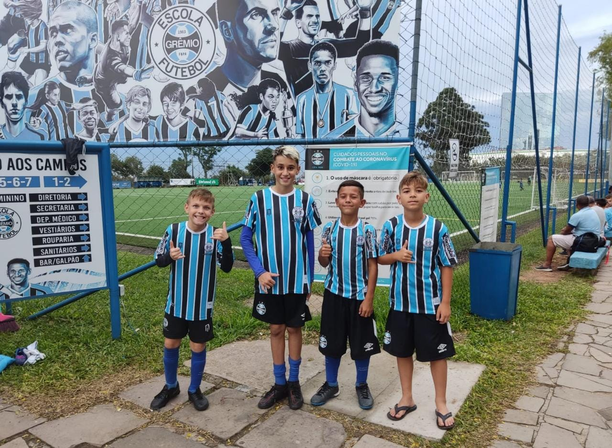
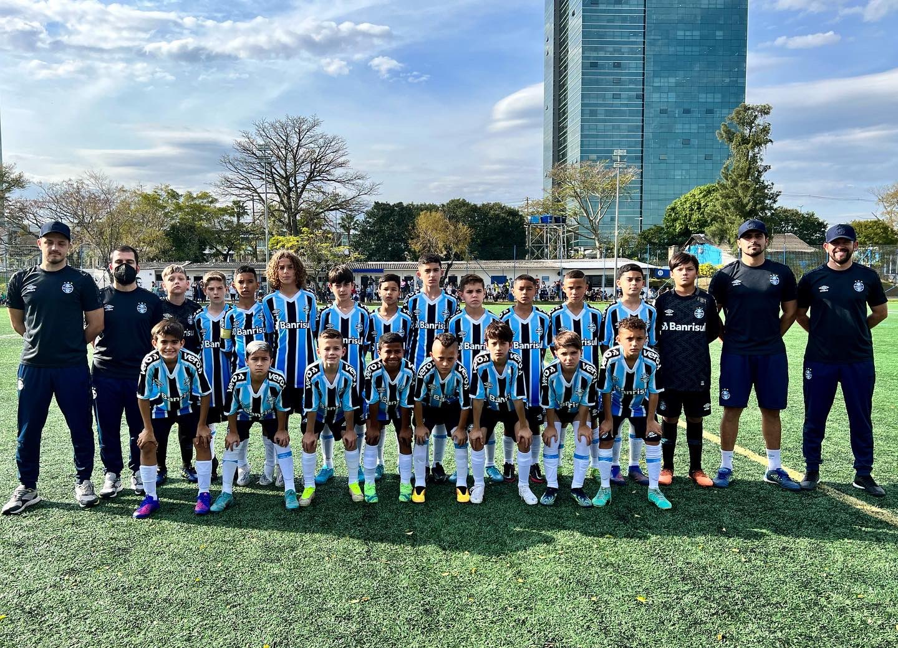

Ensino Fundamental 1
O Ensino Fundamental 1 é a etapa inicial da educação básica, que compreende os anos iniciais da escolarização formal. No Brasil, corresponde aos anos iniciais do Ensino Fundamental, do 1º ao 5º ano, geralmente destinados a crianças com idades entre 6 e 10 anos.
Qual seu foco principal?
Durante o Ensino Fundamental 1, o foco principal é proporcionar aos alunos uma base sólida de conhecimentos, habilidades e competências essenciais para sua formação educacional e desenvolvimento pessoal. Essa fase é crucial para a construção do processo de aprendizagem e socialização das crianças.
As principais características do Ensino Fundamental 1 incluem:
Introdução à leitura, escrita e matemática: Nessa fase, são ensinados os fundamentos da leitura, escrita e matemática. As crianças começam a adquirir as habilidades básicas de leitura, como reconhecimento de letras, formação de palavras e compreensão de textos simples. Na matemática, são abordados conceitos como números, operações básicas, formas geométricas, entre outros.
Desenvolvimento de habilidades motoras e cognitivas: O Ensino Fundamental 1 também se preocupa em desenvolver habilidades motoras e cognitivas das crianças. São realizadas atividades que estimulam a coordenação motora, percepção visual, raciocínio lógico, memória e atenção.
Ensino Fundamental 2
O que é?
O Ensino Fundamental 2 é uma etapa da educação básica que compreende os anos finais do Ensino Fundamental, geralmente destinado a estudantes com idades entre 11 e 14 anos, dependendo do sistema educacional de cada país.
Durante o Ensino Fundamental 2, os alunos avançam em relação aos conhecimentos adquiridos no Ensino Fundamental 1, aprofundando suas habilidades em diversas áreas do conhecimento. Essa etapa tem como objetivo proporcionar uma formação mais ampla e sólida, preparando os estudantes para os desafios do Ensino Médio.
Características
Organização curricular: Os conteúdos são organizados em disciplinas específicas, como Língua Portuguesa, Matemática, Ciências, História, Geografia, Artes, Educação Física, entre outras. Cada disciplina aborda temas e conceitos próprios, desenvolvendo habilidades específicas.
Aprofundamento dos conhecimentos: Os alunos aprofundam seus conhecimentos nas diferentes disciplinas, explorando conceitos mais complexos e aprimorando suas habilidades de análise, resolução de problemas e pensamento crítico.
Maior autonomia: Os estudantes são incentivados a desenvolver maior autonomia em relação aos seus estudos. Eles começam a assumir responsabilidades pela organização do tempo, estudo e tarefas escolares, preparando-se para uma maior independência acadêmica.
Ensino Médio
O Ensino Médio é uma etapa da educação básica que segue o Ensino Fundamental e precede o Ensino Superior. Geralmente, é destinado a estudantes com idades entre 15 e 18 anos, dependendo do sistema educacional de cada país.
O Ensino Médio tem como objetivo proporcionar uma formação mais aprofundada, ampliar os conhecimentos adquiridos no Ensino Fundamental e preparar os estudantes para a vida adulta, o ingresso no mercado de trabalho ou para o prosseguimento dos estudos em nível superior.
Características
Organização curricular: O currículo do Ensino Médio é composto por diferentes disciplinas, como Matemática, Língua Portuguesa, Biologia, Química, Física, História, Geografia, Filosofia, Sociologia, Artes, Educação Física e Língua Estrangeira. Cada disciplina tem seu próprio conjunto de conhecimentos e habilidades a serem desenvolvidos.
Aprofundamento dos conhecimentos: No Ensino Médio, os alunos aprofundam seus conhecimentos nas diferentes áreas do conhecimento. Os conteúdos são mais complexos e abrangentes, permitindo uma compreensão mais aprofundada dos conceitos e teorias.
Flexibilidade curricular: Em alguns sistemas educacionais, o Ensino Médio pode oferecer opções de disciplinas eletivas ou áreas de concentração, permitindo aos alunos escolherem áreas específicas de estudo com base em seus interesses e aptidões.
Preparação para o vestibular ou acesso ao ensino superior: O Ensino Médio tem como objetivo preparar os estudantes para os exames vestibulares ou outros processos de seleção para ingresso no ensino superior. Nessa fase, são abordados conteúdos e estratégias específicas para a realização dessas provas.
Orientação profissional: O Ensino Médio também oferece orientação profissional para auxiliar os estudantes na escolha de carreiras e no planejamento de suas trajetórias educacionais e profissionais futuras. Isso pode incluir informações sobre diferentes profissões, mercado de trabalho, cursos superiores, entre outros aspectos relacionados à carreira.
Escola
GRÊMIO
Manhuaçu:
(33) 98749-0502
Escola Grêmio 2023 - Todos os direitos reservados